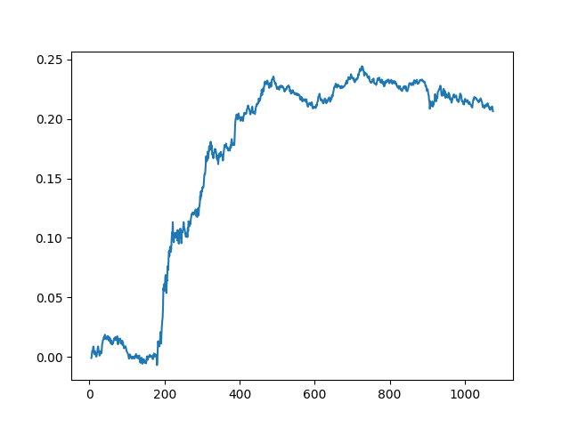

import statsmodels.formula.api as smf
import statsmodels.api as sm
import pandas as pd
df = pd.read_csv('gld_uso.csv')
cols = ['GLD','USO']Borsada ortalamaya dönüş (mean-reversion) ile nasıl işlem yapılır? Daha önce örnekleri gördük, Z-skoru yarattık ve ona ters yönde işlem yaptık. Altta bazı ek noktalar gösterilecek.
Lineer Regresyon ile bulunan yatırım bölüştürme oranı (hedge ratio) zaman serisinin her anı için “en iyi’’ olmayabilir. Bu durumda yatırımcı belli bir pencere üzerinden yakın tarihe bakıp oranı sürekli tekrar tekrar hesaplamayı seçebilir. Altta görülen kod bunu yapıyor,
import statsmodels.api as sm
lookback=20;
df['hedgeRatio'] = np.nan
for t in range(lookback,len(df)):
x = np.array(df['GLD'])[t-lookback:t]
x = sm.add_constant(x)
y = np.array(df['USO'])[t-lookback:t]
df.loc[t,'hedgeRatio'] = sm.OLS(y,x).fit().params[1]
yport = np.ones(df[cols].shape); yport[:,0] = -df['hedgeRatio']
yport = yport.sum(axis=1)
yport = pd.Series(yport)
data_mean = yport.rolling(window=20).mean()
data_std = yport.rolling(window=20).std()
df['numUnits'] = -1*(yport-data_mean) / data_std
tmp1 = np.ones(df[cols].shape) * np.array([df['numUnits']]).T
tmp2 = np.ones(df[cols].shape); tmp2[:, 0] = -df['hedgeRatio']
positions = pd.DataFrame(tmp1 * tmp2 * df[cols])
pnl = positions.shift(1) * (df[cols] - df[cols].shift(1)) / df[cols].shift(1)
pnl = pnl.sum(axis=1)
ret=pnl / np.sum(np.abs(positions.shift(1)),axis=1)
print ('APR', ((np.prod(1.+ret))**(252./len(ret)))-1)
print ('Sharpe', np.sqrt(252.)*np.mean(ret)/np.std(ret))APR 0.23319087620701384
Sharpe 1.1215726543503066Yıllık getiri yüzde 23 Sharpe oranı 1.12. Fena değil çünkü bu seri koentegre bile değil,
import sys; sys.path.append('../tser_030_coint')
import pyconometrics
print (pyconometrics.cadf(np.matrix(df['GLD']).H,
np.matrix(df['USO']).H,0,1)){'alpha': np.float64(-0.0031124833978737783), 'adf':
np.float64(-1.5150247935770818), 'crit': matrix([[-3.88031, -3.35851,
-3.03798, -1.01144, -0.65334, 0.15312]]), 'nlag': 1, 'nvar': 1}Oran Kullanımı
Eğer basit bir şekilde \(y/x\) ile iki varlığını oranını “işlem sinyali’’ olarak kullansaydık ne olurdu? Ayrıca diyelim ki her iki varlığa eşit para yatırıyoruz,
df['hedgeRatio'] = df['USO'] / df['GLD']
data_mean = df['hedgeRatio'].rolling(window=20).mean()
data_std = df['hedgeRatio'].rolling(window=20).std()
df['numUnits'] = -1*(df['hedgeRatio']-data_mean) / data_std
positions = df[['numUnits','numUnits']].copy()
positions = positions * np.array([-1., 1.])
pnl = positions.shift(1) * np.array((df[cols] - df[cols].shift(1))
/ df[cols].shift(1))
pnl = pnl.fillna(0).sum(axis=1)
ret=pnl / np.sum(np.abs(positions.shift(1)),axis=1)
print ('APR', ((np.prod(1.+ret))**(252./len(ret)))-1.)
print ('Sharpe', np.sqrt(252.)*np.mean(ret)/np.std(ret))APR -0.14067355886298372
Sharpe -0.7495829329023052plt.plot(np.cumprod(1+ret)-1)
plt.savefig('tser_mrimp_01.png')
Sonuç iyi değil.
Bollinger Bantları
Şimdiye kadar gösterilen lineer strateji basit: tek birimlik durağanlaştırılmış portföy eğer piyasanın yürüyen ortalama üzerinden olan fiyatın üzerine çıkmışsa, bu çıkış oranında varlık al, düşüşte satmaya başla. Bölüştürme oranı iki kere kullanılıyor yani, ilk önce yürüyen ortalama fiyatlarını birleştirmek için, ve sonra en son piyasa fiyatlarını birleştirmek için. Bu iki serinin birisi durağan serinin son hali, ortalamadan sapmayı bu ikinci serinin birincisine oranla ölçüyoruz.
Bu strateji seçildi çünkü hiçbir dış parametre gerektirmeyen bir strateji. Az parametre iyi bir şey, böylece aşırı uygunluk (overfitting) gibi problemlerden biraz daha uzaklaşmış oluyoruz (parametreler geçmiş veriye aşırı iyi uyuyor, bu sebeple geleceği tahmin yeteneği kayboluyor).
Bollinger bantları üstteki stratejinin bir uzantısı, yine ortalamadan
uzaklaşınca pozisyona giriyoruz, fakat bu uzaklaşmanın kaç standart
sapma oranında olduğuna bakıyoruz. Mesela uzaklaşma 1 standart sapma
oranından fazla ise girebiliriz, 0 standart sapma oranında ise (yani
ortalama üzerinde) pozisyondan çıkarız (bu parametre isimleri sırasıyla
entryZscore, exitZscore. Ya da
entryZscore=1, exitZscore=-1 diyebilirdik, bu
durumda üstte ve altta 1 standart sapmadan fazla olduğu zaman alım,
satım olurdu.
lookback=20;
df['hedgeRatio'] = np.nan
for t in range(lookback,len(df)):
x = np.array(df['GLD'])[t-lookback:t]
x = sm.add_constant(x)
y = np.array(df['USO'])[t-lookback:t]
df.loc[t,'hedgeRatio'] = sm.OLS(y,x).fit().params[1] cols = ['GLD','USO']
yport = np.ones(df[cols].shape)
yport[:,0] = -df['hedgeRatio']
yport = yport * df[cols]
yport = yport[cols].sum(axis=1)
yport = pd.Series(yport)
data_mean = yport.rolling(window=20).mean()
data_std = yport.rolling(window=20).std()
zScore=(yport-data_mean)/data_std
entryZscore=1.
exitZscore=0
longsEntry=zScore < -entryZscore
longsExit=zScore > -exitZscore
shortsEntry=zScore > entryZscore
shortsExit=zScore < exitZscore
numUnitsLong = pd.Series([np.nan for i in range(len(df))])
numUnitsShort = pd.Series([np.nan for i in range(len(df))])
numUnitsLong[0] = 0.
numUnitsShort[0] = 0.
numUnitsLong[longsEntry] = 1.0
numUnitsLong[longsExit] = 0.0
numUnitsLong = numUnitsLong.fillna(method='ffill')
numUnitsShort[shortsEntry] = -1.0
numUnitsShort[shortsExit] = 0.0
numUnitsShort = numUnitsShort.fillna(method='ffill')
df['numUnits'] = numUnitsShort + numUnitsLong
tmp1 = np.ones(df[cols].shape) * np.array([df['numUnits']]).T
tmp2 = np.ones(df[cols].shape); tmp2[:, 0] = -df['hedgeRatio']
positions = pd.DataFrame(tmp1 * tmp2 * df[cols])
pnl = positions.shift(1) * (df[cols] - df[cols].shift(1)) / df[cols].shift(1)
pnl = pnl.sum(axis=1)
ret=pnl / np.sum(np.abs(positions.shift(1)),axis=1)
ret=ret.fillna(0)
print ('APR', ((np.prod(1.+ret))**(252./len(ret)))-1)
print ('Sharpe', np.sqrt(252.)*np.mean(ret)/np.std(ret))APR 0.1977158548013851
Sharpe 1.064087612417886plt.plot(np.cumprod(1+ret)-1)
plt.title(u'Kümülatif Birleşik Getiri')
plt.savefig('tser_mrimp_02.png')
Kalman Filtreleri ile Dinamik Lineer Regresyon
Gerçekten koentegre halinde olan iki fiyat zaman serisi için yapılacaklar basit - bulabildiğin kadar tarihi veri bul, basit lineer regresyon ya da Johansen test kullanarak özvektörleri bul. Fakat diğer yazılarda gördüğümüz gibi pür koentegresyon çok az sayıda fiyat zaman serisinin erişebildiği bir mertebe. O zaman, zamana göre değişebilecek yatırım bölüştürme oranını (hedge ratio) nasıl hesaplayacağız? Diğer örneklerde gördük, bir geriye bakış penceresi kararlaştır, ve oranı sadece bu pencere içindeki tarihe veriden hesapla. Bu yaklaşımın dezavantajı, eğer pencere ufak ise pencere kaydırıldıkça yatırım oranı aşırı sapmalar gösterebilmesi. Aynı durum ortalamayı ve standard sapma için yürüyen ortalama ve yürüyen sapma kullanırken de ortaya çıkacak. O zaman eğer en sondaki verilere öncekilerden daha fazla ağırlık veren, ve kullanıcının kafasından attığı bir başlangıç noktasına göre pencere oluşturmayan bir yöntem olsa bu bir ilerleme olurdu. Yatırım bölüştürme oranını Kalman filtresi (KF) kullanarak hesaplayarak bu ilerlemeyi sağlamayı umuyoruz [1, sf 74].
KF hakkında detaylar [2] yazısında bulunabilir; KF formüllerinin türetilmesi orada anlatıldı. Bu yazıda gereken bölüştürme oranı, ve yan ürün olarak bu oranın ortalamasını ve uçuculuğunu (volatility) hesaplamak, o zaman gizli değişken bölüştürme oranı \(\beta\), görünen (observable) değişken ise fiyat zaman serisi \(y\) olacak, yani daha önce basit lineer regresyona \(y\) olarak verilen fiyat serisi. Tüm KF modeli,
\[ \beta_t = I \cdot \beta_{t-1} + \omega_{t-1}\]
\[ y_t = x_t \beta_t + \epsilon_t \]
\(\omega_{t-1},\epsilon_t\) Gaussian gürültü olmak üzere.
Yukarıda ilginç birkaç “numara’’ yapıldı; aslında her iki seriyi de, hem \(x\)’i, hem \(y\)’yi biliyoruz, yani onlar”görünüyor’’. Ama yapmak istediğimiz numara bağlamında onlardan sadece birini görünen yaptık, ayrıca gizli değişkeni \(\beta\) yaptık, genellikle bu tür bir parametre gizli değişkeni transforme eden matris olarak ele alınırdı. Görünen tek veri ise modele göre \(y\). Bu durumda \(x\) gizli değişkeni transforme eden matris gibi kullanılıyor, bu da ilginç.
Üstteki formüllerden birincisi geçiş (transition) formülü, ve biz eldeki tüm verileri temsil eden tek bir \(\beta\) aradığımız için bu \(\beta\)’nin değişmediğini modele söylüyoruz, bu sebeple geçiş matrisi \(I\), yani birim matris, bu matris çarpımda hiçbir etki yaratmıyor.
import numpy as np
def kalman_filter(x,y):
delta=0.0001
Ve=0.001
yhat = np.ones(len(y))*np.nan
e = np.ones(len(y))*np.nan
Q = np.ones(len(y))*np.nan
R = np.zeros((2,2))
P = np.zeros((2,2))
beta = np.matrix(np.zeros((2,len(y)))*np.nan)
Vw=delta/(1-delta)*np.eye(2)
beta[:, 0]=0.
for t in range(len(y)):
if (t > 0):
beta[:, t]=beta[:, t-1]
R=P+Vw
yhat[t]=np.dot(x[t, :],beta[:, t])
xt = np.matrix(x[t, :])
Q[t] = np.dot(np.dot(xt,R),xt.T) + Ve
e[t]=y[t]-yhat[t]
K=np.dot(R,np.matrix(x[t, :]).T) / Q[t]
beta[:, t]=beta[:, t]+np.dot(K,np.matrix(e[t]))
P=R-np.dot(np.dot(K,xt),R)
return beta, e, Qimport pandas as pd, kf
ewdf = pd.read_csv('../tser_030_coint/ETF.csv')
x = ewdf[['ewa']].copy()
y = ewdf[['ewc']].copy()
x['intercept'] = 1.
x = np.array(x)
y = np.array(y)
beta, e, Q = kf.kalman_filter(x,y)plt.plot(beta[0, :].T)
plt.title('EWC(y) ve EWA(x) Arasındaki Eğim - Beta[0,t]')
plt.savefig('tser_mrimp_03.png')
plt.plot(beta[1, :].T)
plt.title('Kesi, Beta[1,t]')
plt.savefig('tser_mrimp_04.png')Bu modelin güzel yan etkilerinden biri şu oldu: KF’in doğal olarak hesapladığı parametreler ile direk bir ortalamaya-dönüş stratejisi kodlayabiliriz. \(e_t\) içinde ölçüm tahmin hatası var, ki bu hata EWC-EWA’nın tahmin edilen ortalamasından sapmasından başka bir şey değil. Bu sapmayı satın alırız, eğer çok pozitif ise al-tut yaparız, çok negatif ise açığa satış. Çok pozitif, çok negatif neye göre belirlenir? Bu da \(e_t\)’nin tahmin edilen standart sapmasından başka bir şey değil, ki bu bilgi de \(\sqrt{Q_t}\) içinde! Her iki parametreyi grafiklersek alttaki görüntü çıkıyor.
plt.plot(e[2:], 'r')
plt.plot(np.sqrt(Q[2:]))
plt.savefig('tser_mrimp_05.png')
Geri kalanlar daha önce Bollinger bantlarında gördüğümüz gibi.
cols = ['ewa','ewc']
y2 = ewdf[cols]
longsEntry=e < -1*np.sqrt(Q)
longsExit=e > -1*np.sqrt(Q)
shortsEntry=e > np.sqrt(Q)
shortsExit=e < np.sqrt(Q)
numUnitsLong = pd.Series([np.nan for i in range(len(ewdf))])
numUnitsShort = pd.Series([np.nan for i in range(len(ewdf))])
numUnitsLong[0]=0.
numUnitsShort[0]=0.
numUnitsLong[longsEntry]=1.
numUnitsLong[longsExit]=0
numUnitsLong = numUnitsLong.fillna(method='ffill')
numUnitsShort[shortsEntry]=-1.
numUnitsShort[shortsExit]=0
numUnitsShort = numUnitsShort.fillna(method='ffill')
ewdf['numUnits']=numUnitsLong+numUnitsShort
tmp1 = np.tile(np.matrix(ewdf.numUnits).T, len(cols))
tmp2 = np.hstack((-1*beta[0, :].T,np.ones((len(ewdf),1))))
positions = np.array(tmp1)*np.array(tmp2)*y2
positions = pd.DataFrame(positions)
tmp1 = np.tile(np.matrix(ewdf.numUnits).T, len(cols))
tmp2 = np.hstack((-1*beta[0, :].T,np.ones((len(ewdf),1))))
positions = np.array(tmp1)*np.array(tmp2)*y2
positions = pd.DataFrame(positions)
tmp1 = np.array(positions.shift(1))
tmp2 = np.array(y2-y2.shift(1))
tmp3 = np.array(y2.shift(1))
pnl = np.sum(tmp1 * tmp2 / tmp3,axis=1)
ret = pnl / np.sum(np.abs(positions.shift(1)),axis=1)
ret = ret.fillna(0)
print ('APR', ((np.prod(1.+ret))**(252./len(ret)))-1)
print ('Sharpe', np.sqrt(252.)*np.mean(ret)/np.std(ret))APR 0.262251943494046
Sharpe 2.361949085176113ETF ve ETF’in Öğe Hisseleri Arasında Arbitraj
Bir ETF ve onu oluşturan öğe hisseler arasında da arbitraj fırsatları vardır. Bu portföyü oluşturmak için her öğe hisse ile ETF arasında teker teker koentegrasyon aranır, diğerleri atılır. Bu örneği dünyanın belki de en ünlü ETF’i üzerinde göstereceğiz. Standart & Poors endeksini baz alan SPY.
Tarihi veri olarak Ocak 1, 2007 ile Aralık 31, 2007 arasını seçtik, bu aralıktaki SPY öğelerinin SPY’in kendisi ile en az yüzde 90 koentegre olma şartını Johansen testi ile kontrol edeceğiz. Ardından bu seçilen senetlerin her birine eşit sermaye ayıracağız, ve tüm portföy üzerinde tekrar Johansen testi uygulayıp hala koentegre olup olmadığını kontrol edeceğiz. Bu ikinci test lazım çünkü her öğeye verilen kafamıza göre verdiğimiz (burada eşit) sermaye ağırlığı üzerinden oluşturulmuş portföyün illa koentegre olacağı gibi bir şart yoktur. Bu ikinci test için log fiyat kullanacağız, çünkü bu portföyü her gün tekrar dengeleyeceğimizi bekliyoruz, yani senet miktarı üzerinden değil sermaye seviyesini sabit tutacağız.
import pandas as pd, zipfile
with zipfile.ZipFile('SPY3.zip', 'r') as z:
dfspy3 = pd.read_csv(z.open('SPY3.csv'),sep=',')
dfspy3 = dfspy3.set_index('Date')
train = dfspy3[(dfspy3.index>=20070101) & (dfspy3.index<=20071231)]
testspy3 = dfspy3[(dfspy3.index > 20071231)]
resdf = pd.DataFrame(index=dfspy3.columns)
resdf['isCoint'] = np.nan
import sys; sys.path.append('../tser_coint')
from johansen import coint_johansen, print_johan_stats
for s in dfspy3.columns:
if s == 'SPY': continue
# johansen cagrisini kullaniyoruz boylece y,x hangisi secmemiz
# gerekmiyor
data = train[[s,'SPY']].dropna()
if len(data) < 250: continue
res = coint_johansen(data, 0, 1)
if res.lr1[0] > res.cvt[0][0]:
resdf.loc[s,'isCoint'] = True
print (resdf.isCoint.sum())9898 tane senet koentegre imiş. Şimdi bu senetlerle portföy oluşturalım, ve tekrar koentegrasyon testi yapalım,
coint_cols = list(resdf[resdf.isCoint==True].index)
yN = train[coint_cols]
logMktVal_long = np.log(yN).sum(axis=1)
ytest = pd.concat([logMktVal_long, np.log(train.SPY)],axis=1)
res = coint_johansen(ytest, 0, 1)
print_johan_stats(res)trace statistic [15.86864835 6.19735725]
critical vals %90,%95,%99
r<=0 [13.4294 15.4943 19.9349]
r<=1 [2.7055 3.8415 6.6349]
eigen statistic [9.6712911 6.19735725]
critical values %90,%95,%99
r<=0 [12.2971 14.2639 18.52 ]
r<=1 [2.7055 3.8415 6.6349]
ozdegerler [0.0380959 0.02458181]
ozvektorler
[[ 1.09386171 -0.27989806]
[-105.55999232 56.09328286]]tmp1 = np.ones((len(testspy3),resdf.isCoint.sum()))*res.evec[0,0]
tmp2 = np.ones((len(testspy3),1))*res.evec[1,0]
weights = np.hstack((tmp1,tmp2))
yNplus = testspy3[coint_cols + ['SPY']]
logMktVal = np.sum(weights * np.log(yNplus),axis=1)
lookback=5
data_mean = logMktVal.rolling(window=lookback).mean()
data_std = logMktVal.rolling(window=lookback).std()
numUnits = -1*(logMktVal-data_mean) / data_std
numUnits2 = np.reshape(numUnits, (len(numUnits),1))
positions = pd.DataFrame(np.tile(numUnits2, weights.shape[1]),\
columns=yNplus.columns)*weights
tmp1 = np.log(yNplus)-np.log(yNplus.shift(1))
pnl = np.sum(np.array(positions.shift(1)) * np.array(tmp1), axis=1)
ret = pnl / np.sum(np.abs(positions.shift(1)),axis=1)
print ('APR', ((np.prod(1.+ret))**(252./len(ret)))-1)
print ('Sharpe', np.sqrt(252.)*np.mean(ret)/np.std(ret))APR 0.044929874512839474
Sharpe 1.323109852605057Sonuç ilk deneme için fena sayılmaz; Bazı basit ilerlemeler mümkündür, mesela her zaman aralığı için portföyü oluşturan senetleri değiştirmek.
plt.plot(np.cumprod(1+ret)-1)
plt.savefig('tser_mrimp_06.png')
Trendli Ortalamaya Dönüş
Bir tane de benden. Finans zaman serilerinin çoğunlukla bir trend’e dönüş yaptığını görebiliriz. Eğer bu trend’i çıkartırsak geriye kalan nedir? Ortalamaya dönüş yapan, durağan bir zaman serisi değil mi? S&P 500 üzerinde görelim,
import pandas as pd
df = pd.read_csv('../tser_010_back/SPY.csv',index_col='Date',parse_dates=True)
df['SPY'] = df[['Adj Close']]
df = df[df.index < '2005-01-01']
df.SPY.plot()
plt.savefig('tser_mrimp_07.png')Belli noktalarda geriye dönerek belli bir pencere içindeki zaman seri parçası üzerinde lineer regresyon uyguluyoruz. Daha sonra bu uydurduğumuz çizgiyi ileri dönük tahmin olarak kullanıyoruz, bu tahminin altına düşüşlerde alım, yukarı çıkışlarda satım yapıyoruz.
import statsmodels.api as sm
lookback = 100; forward = 30
forward_points = range(lookback, len(df), forward)
x = np.ones((lookback,2))
x[:,1] = np.array(range(lookback))
for t in forward_points:
y = df.SPY[t-lookback:t]
f = sm.OLS(y,x).fit()
df.loc[df.index[t],'intercept'] = f.params[0]
df.loc[df.index[t],'slope'] = f.params[1]
df['ols'] = np.nan
x_lookback = np.array(range(lookback))
for t in forward_points:
y = x_lookback * df.iloc[t].slope + df.iloc[t].intercept
df.iloc[t-lookback:t].loc[:,'ols'] = y
df[['SPY','ols']].plot()
plt.savefig('tser_mrimp_08.png')Trend’i çıkartınca geriye kalanın hakikaten durağan olduğunu görelim,
df['MR'] = df.SPY - df.ols
df.MR.plot()
plt.savefig('tser_mrimp_09.png')win=5
data_mean = df.MR.rolling(window=win).mean()
data_std = df.MR.rolling(window=win).std()
df['mktVal'] = -1*(df.MR-data_mean) / data_std
pnl = df['mktVal'].shift(1) * (df['MR']-df['MR'].shift(1))/ df['MR'].shift(1)
ret=pnl.fillna(0) / np.sum(np.abs(df['mktVal'].shift(1)))
print ('APR', ((np.prod(1.+ret))**(252./len(ret)))-1.)
print ('Sharpe', np.sqrt(252.)*np.mean(ret)/np.std(ret))APR 0.2801817694094304
Sharpe 0.8884148597414459Kaynaklar
[1] Chan, Algorithmic Trading
[2] Bayramlı, Fizik, Kalman Filtreleri